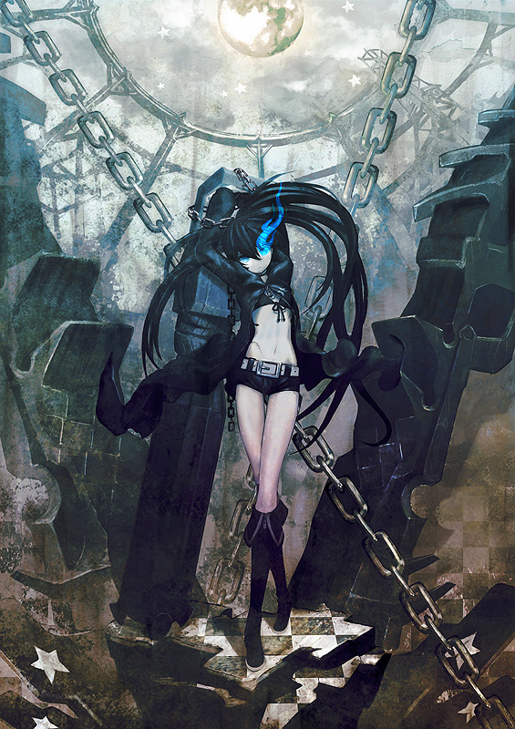
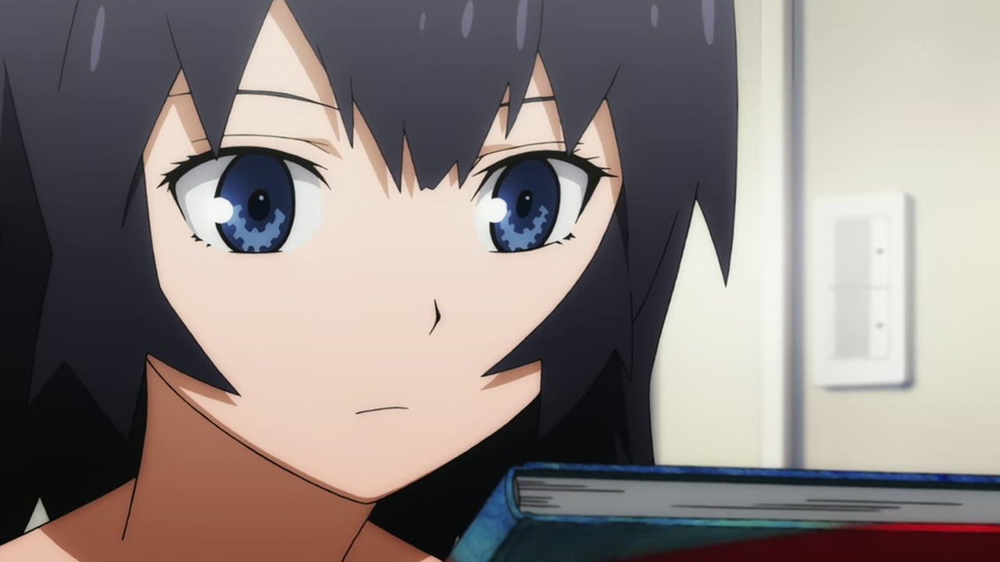
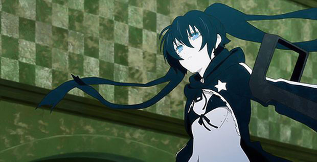
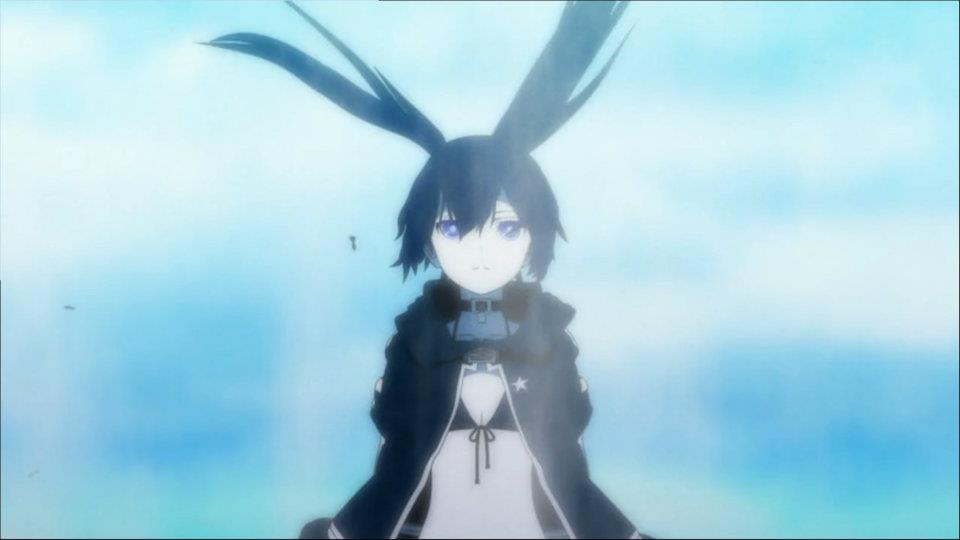
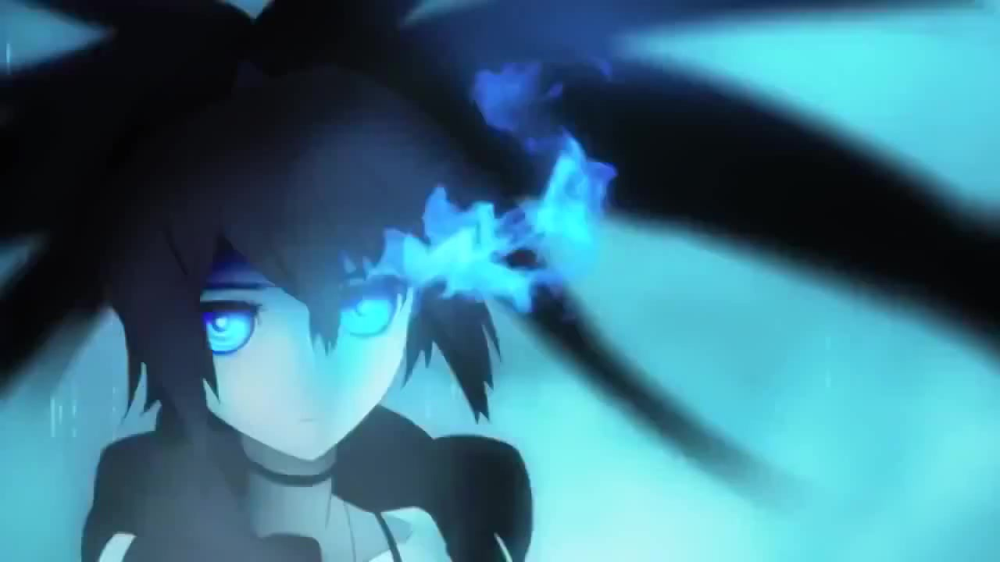
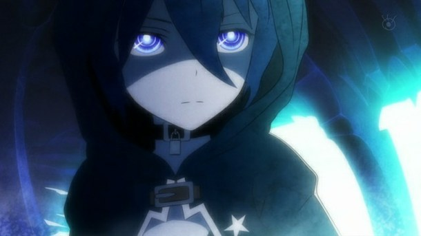
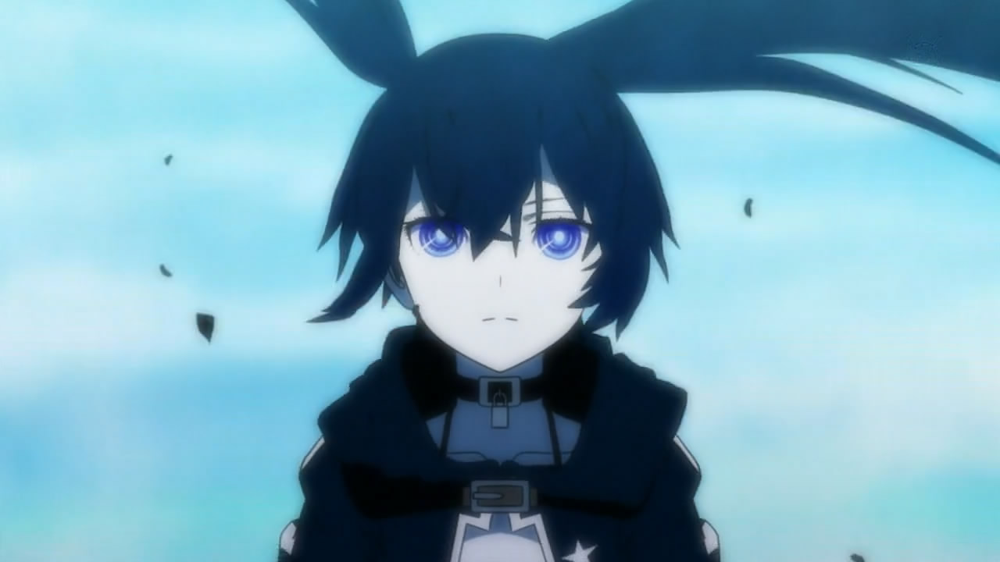

Black Rock Shooter
On the first day of junior high school, Mato Kuroi happens to run into Yomi Takanashi, a shy, withdrawn girl whom she immediately takes an interest in. Mato tries her best to make conversation with Yomi, wanting to befriend her. At first, she is avoided, but the ice breaks when Yomi happens to notice a decorative blue bird attached to Mato's phone, which is from the book "Li'l Birds At Play." Discovering they have a common interest, the two form a strong friendship.





